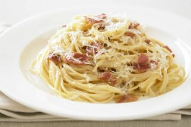

Cabonara pasta

Ingredients
500 g bacon rashers diced
600 ml thickened cream
3 tbs parmesan cheese
4 egg yolks
1/2 tsp salt and pepper *to taste
500 g pasta
Method
1. Lightly fry bacon in a large pan and season with salt and pepper.
2. Remove from heat and add cream and cheese.
3. Return to low heat and stir until cheese has melted.
4. Remove from heat and add egg yolks and stir through.
5. Return to heat and mix well for 1-2 minutes.
6. Remove from heat and let stand for 2 minutes.
7. Add sauce to pasta, toss and serve.